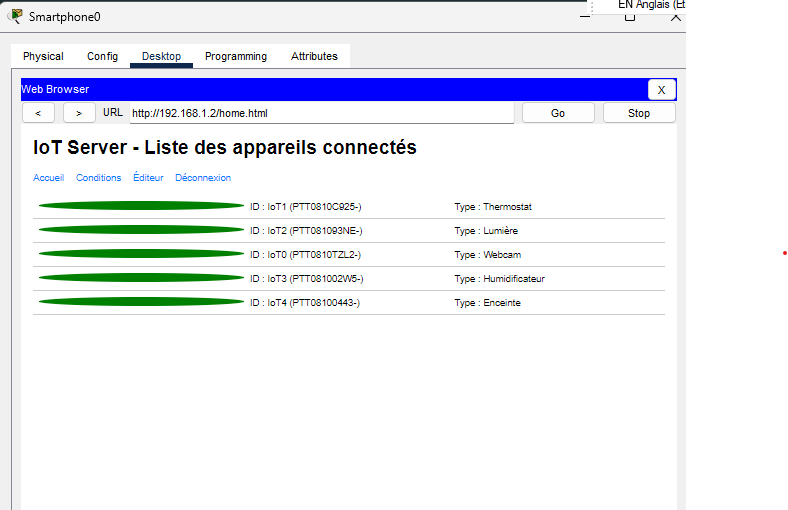
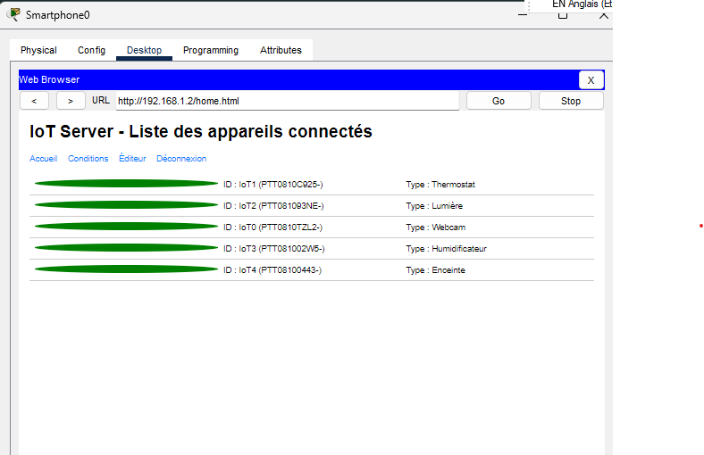
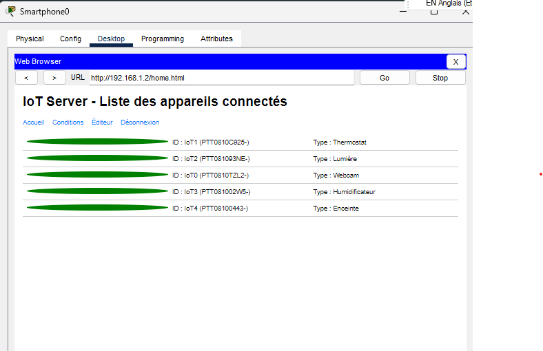

1. Reproduisez cette topologie en configurant le NAT du réseau
imageTopologie1
Configuration nat
imageConfNat
DNS
imageConfServeurDNS
Configuration du serveur DHCP sur le routeur Cisco
imageConfServeurDNS
Vérifications des ip
imageConfServeurDNS
Activé les services dns
imageConfServeurDNS
Test
imageTestPing
Configuration de NAT sur le routeur Cisco :
imageConfNat
Configuration de NAT dynamique (PAT) :
imageConfNatDyN
Test de connectivité
2. Reproduisez cette topologie en configurant le réseau IoT (Internet des Objets).
Topologie2
Configuration du point Acces
imgConfPT-Acess
Activation des services IOT
imageConfTest
Registration au server
imageConfTest
Configurer les IOT

Conclusion
Ce TD m’a permis d’explorer la configuration réseau avec NAT, DHCP et DNS, ainsi que les réseaux IoT, consolidant nos compétences techniques essentielles en connectivité


 
